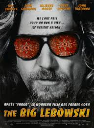

My Favorite movies

|
Barry LindonBarry Lyndon est un film historique anglo-américain de Stanley Kubrick sorti en 1975 et adapté du roman picaresque de William Makepeace Thackeray, Mémoires de Barry Lyndon. |
|  |
The Big LebowskiThe Big Lebowski est un film américano-britannique, sorti en 1998, réalisé par Joel Coen et écrit en collaboration avec son frère Ethan. |
Match PointMatch Point est un film américano-britannique dramatique, réalisé par Woody Allen et sorti en 2005. Les acteurs principaux sont Jonathan Rhys Meyers, Scarlett Johansson, Emily Mortimer, Matthew Goode, Brian Cox et Penelope Wilton. |